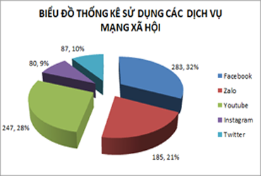
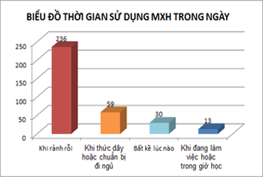
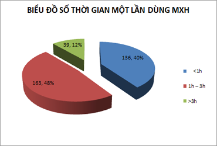
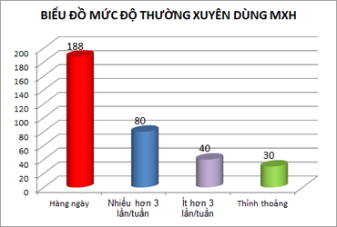
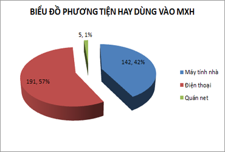
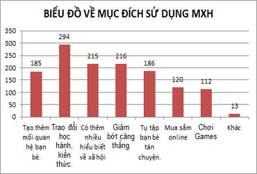
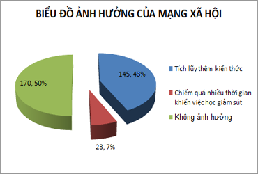
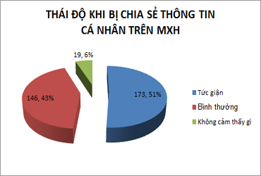
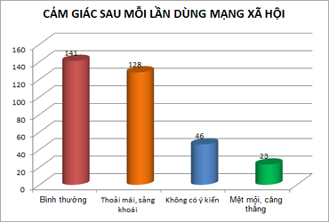
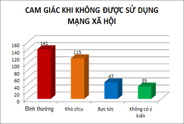

Trang chủ
Trang chủ Dừng điểm vàng
Dừng điểm vàng Góc chia sẻ
Góc chia sẻ |
 Những con số đáng giật mình Những con số đáng giật mìnhTheo trang quochoi.vn ngày 07/03/2020 thì kết quả nghiên cứu của Viện Nghiên cứu Thanh niên đưa ra, Việt Nam đứng thứ 22 toàn cầu về số lượng người sử dụng mạng xã hội và là một trong 10 quốc gia có lượng người dùng Facebook, YouTube cao nhất thế giới, trong đó thanh thiếu niên chiếm tỷ lệ lớn. |
Số liệu khảo sát tại Trường THCS em họcSau khi tiến hành khảo sát trên 8 lớp của khối 8 và khối 9 tại trường với số lượng 338 bạn học sinh, nhóm chúng em đã thống kê số liệu, thể hiện trên biểu đồ như sau:
| 
H1-Biểu đồ sử dụng các dịch vụ mạng xã hội
|

H2- Biểu đồ thời gian sử dụng mạng XH trong ngày
|
| 
H3- Biểu đồ số lượng thời gian mỗi lần dùng MXH
|

H4- Biểu đồ tần suất số lần dùng MXH trong tuần
|
| 
H5- Biểu đồ phương tiện hay sử dụng để vào MXH
|

H6- Biểu đồ Mục đích sử dụng mạng xã hội
|
| 
H7- Biểu đồ Ý kiến về ảnh hưởng của MXH
|

H8-Thái độ khi bị chia sẻ thông tin trên MXH
|
| 
H9-Ý kiến về cảm giác sau mỗi lần dùng MXH
|

H10-Ý kiến về cảm giác khi không được dùng MXH
|
Những đánh giá, nhận xét từ số liệu các biểu đồ trên-100% các bạn được khảo sát đều dùng ít nhất một dịch vụ mạng xã hội nào đó như Facebook, Youtube, Zalo…
- Đa số sử dụng mạng xã hội vào lúc rảnh rỗi trong ngày, thời lượng phần nhiều từ 1 đến 3 giờ mỗi lần qua phương tiện là máy tính nhà hoặc điện thoại, với mục đích sử dụng dùng để trao đổi học hành kiến thức, giảm bớt căng thẳng..
| Mặt tích cực từ số liệu trên + Thông qua mạng xã hội các bạn có thể trao đổi thông tin học tập, thông báo lịch học, trao đổi bài, hay chia sẻ cho nhau những phần kiến thức bổ ích, các trang web và những đường link phục vụ công việc học tập, tra cứu thông tin. + Học hỏi thêm rất nhiều kiến thức, trau dồi những kĩ năng giúp cho bạn hoàn thiện bản thân mình hơn nữa.
|
Mặt đáng quan ngại từ số liệu trên + Sử dụng mạng xã hội quá nhiều sao nhãng thời gian học tập, gây lãng phí thời gian khi lên mạng chỉ chát chít, tán gẫu, bình luận lung tung, nhiều khi trêu chọc nhau, thậm chí bới móc, xỉa xói và nói xấu người khác. + Vẫn còn tỷ lệ không nhỏ, một số bạn sử dụng mạng xã hội để chơi games, xem youtube và cảm thấy mệt mỏi căng thẳng sau mỗi lần dùng. Các bạn sẽ rất dễ chìm đắm trong thế giới ảo, dần mất đi sự tự tin, năng động vốn có của giới trẻ, suy thoái đạo đức tinh thần khi thường xuyên xem các tin tức và hình ảnh xấu liên quan đến bạo lực, … |